Surprisingly minimal appearance cues lead perceivers to accurately judge others’ personality, status, or politics. We investigated people’s precision in judging characteristics of an unknown person, based solely on the shoes he or she wears most often. Participants provided photographs of their shoes, and during a separate session completed self-report measures. Coders rated the shoes on various dimensions, and these ratings were found to correlate with the owners’ personal characteristics.
A new group of participants accurately judged the age, gender, income, and attachment anxiety of shoe owners based solely on the pictures. Shoes can indeed be used to evaluate others, at least in some domains.
Most studies that found associations between physical appearance cues and raters’ judgments used dynamic cues, or a combination of dynamic and static cues (e.g., face and voice; Campanella & Belin, 2007). Face in particular, remains a compelling subject of investigation in this area (Zebrowitz & Montepare, 2008).
Therefore, we know relatively little about accuracy based solely on static cues (e.g., photographs, clothes, accessories; but see work by Borkenau & Liebler [1992] and by Zebrowitz [e.g., Zebrowitz & Collins, 1997]).
Although clothes may “make the man” (Townsend & Levy, 1990), the empirical basis for the claim is limited. We fill this gap in the literature by presenting cues that eliminate facial expressions and body cues of the targets, presenting only one type of static cues.
The goal of the study was to examine the extent to which such a cue by itself contributes to person perception. We chose shoes as a representative of such cues.
Although shoes are usually the single most expensive item in people’s outfit, they have received relatively little attention in research. Shoes serve a practical purpose, and also serve as nonverbal cues with symbolic messages.
People tend to pay attention to the shoes they and others wear (Zeisl, 1935). Variation in colors, shapes, and styles convey various messages about the shoe owner (such as his/her status or intentio- ns; Rossi, 1976; Smith, 1999). Jacoby (1971) was able to use shoes as an index of dogmatism and creativity. Although various people have sugge- sted that shoes can reveal information about their own ers, such as their sense of security or insecurity (Clark et al., 2011), political ideology (Hunt, 1984; Schroedel & Snyder, 1994), and more recently, friendliness, intelligence, happiness, or being outdoorsy (Winget, 2010), there are actually very little data to support these claims.
One possible framework to explain why shoes might serve as an effective cue about their owners and how observers might use that information to form their impressions is Gosling and colleagues’ theory on identity claims and behavioral residue (Gosling, Ko, Mannarelli, & Morris, 2002). Shoes have great variety of styles, brands, looks, and functions. Because of this variety, shoes can carry individual difference information, but do they? Adopting Gosling et al.’s (2002) idea of an identity claim–a symbol displayed by the owners to reinforce their self-image, we suggest that the answer is yes. For example, people who are extraverted may think black and white is dull, and tend to wear more colorful shoes as an expression of their personality. People with higher income may be more likely to wear shoes with high-end brands as a mean to exhibit their social status.
Previous research on thin slices of behavior has found that minimal cues are sufficient for perceivers to accurately judge another person’s personal characteristics.
The current study extends the existing findings by focusing on the associations between shoes and person perception. We tested for accuracy in person perception based on the shoes the person wears, and found people do use shoes to judge others’ characteristics, but these inferences are not always accurate.
Being in the physical presence of a target reveals more personality information than only observing a photograph of the same target, and seeing someone’s shoes alone is even further degraded information.
Some personality traits, such as Emotional Stability and Conscientiousness, are less observable in nature, and often require extensive scrutiny on part of the observer (Ambady, Hallahan, & Rosenthal, 1995).
People use shoes to infer others’ characteristics. Owners wear shoes that present a public image—but that image differs substantially from what they tell us with questionnaires. Observers generally pick up on the image the shoe wearer is conveying, but in doing so they might be fooled. But unless a shoe owner purposefully generates a deceptive image, shoes can be a reliable source of information.
Shoes as a Source of First Impression
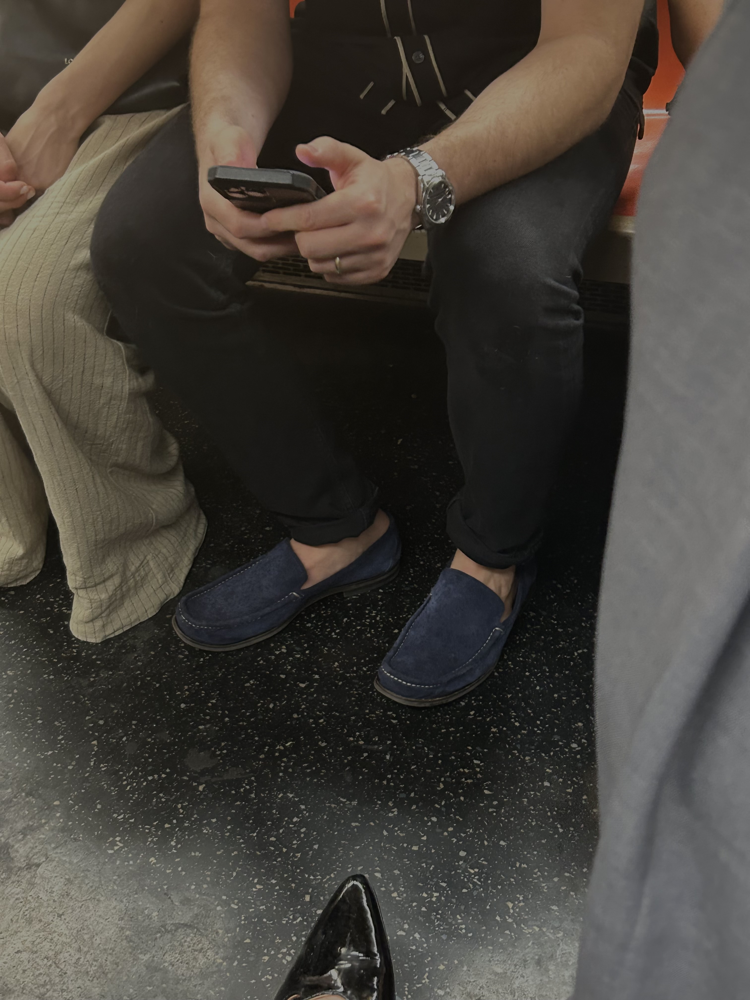
 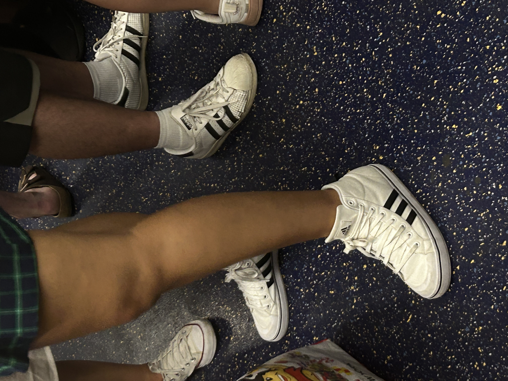
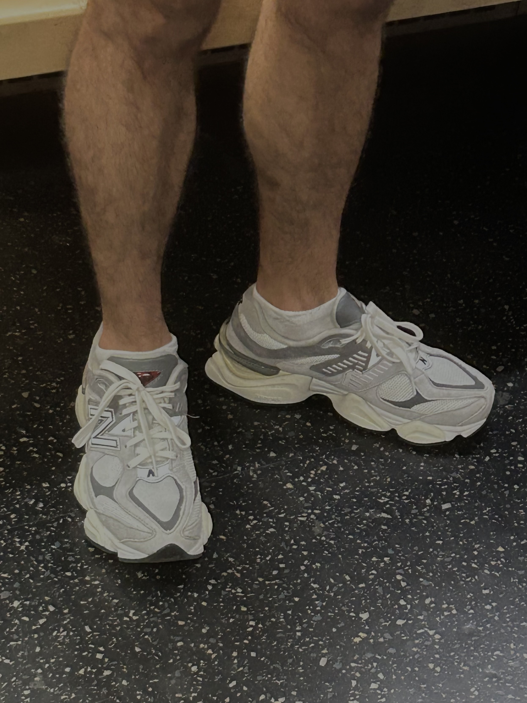
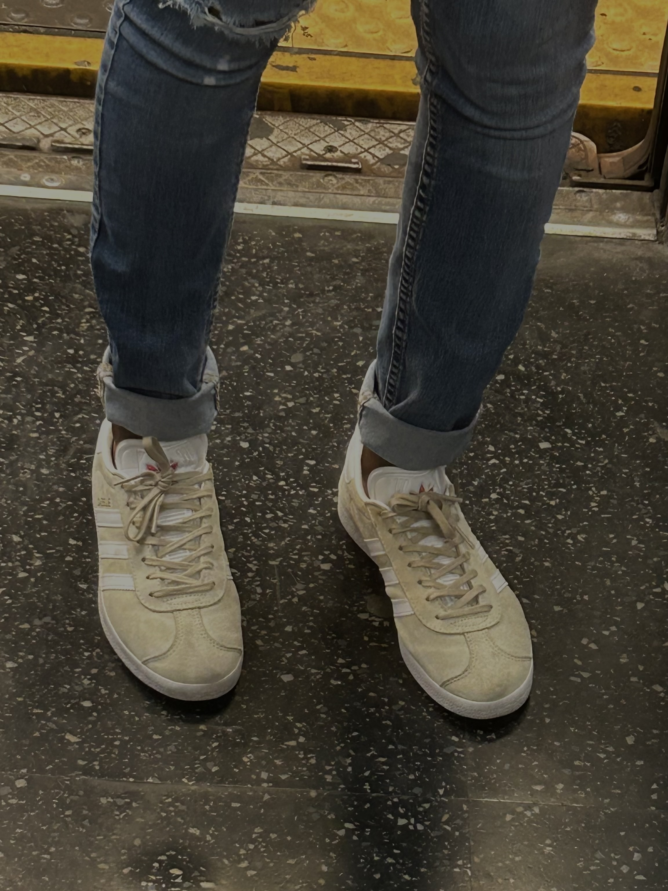
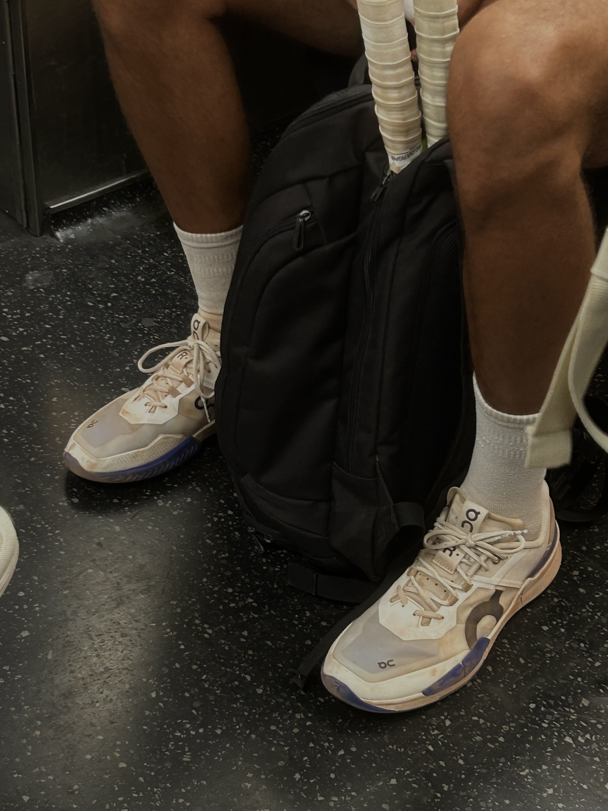
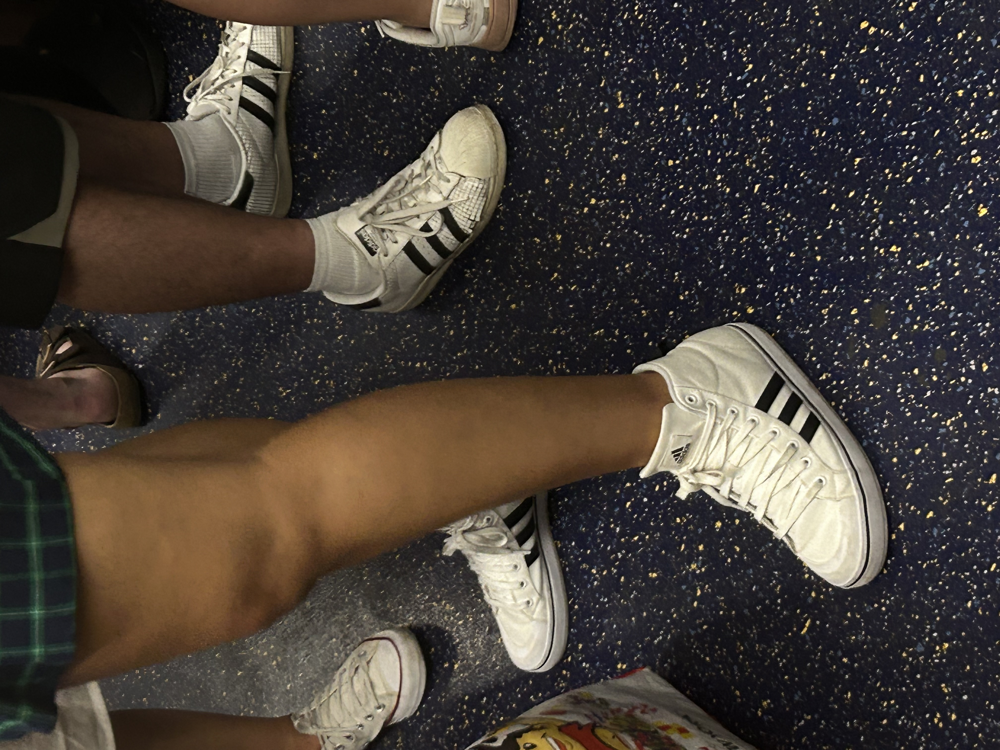
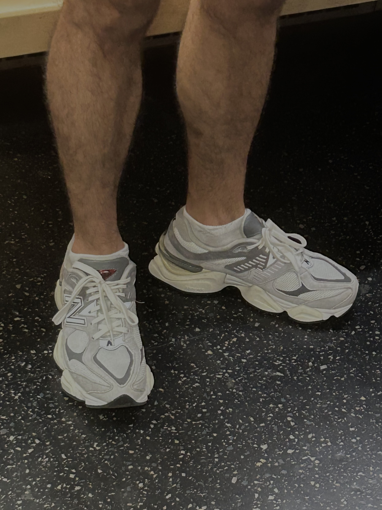
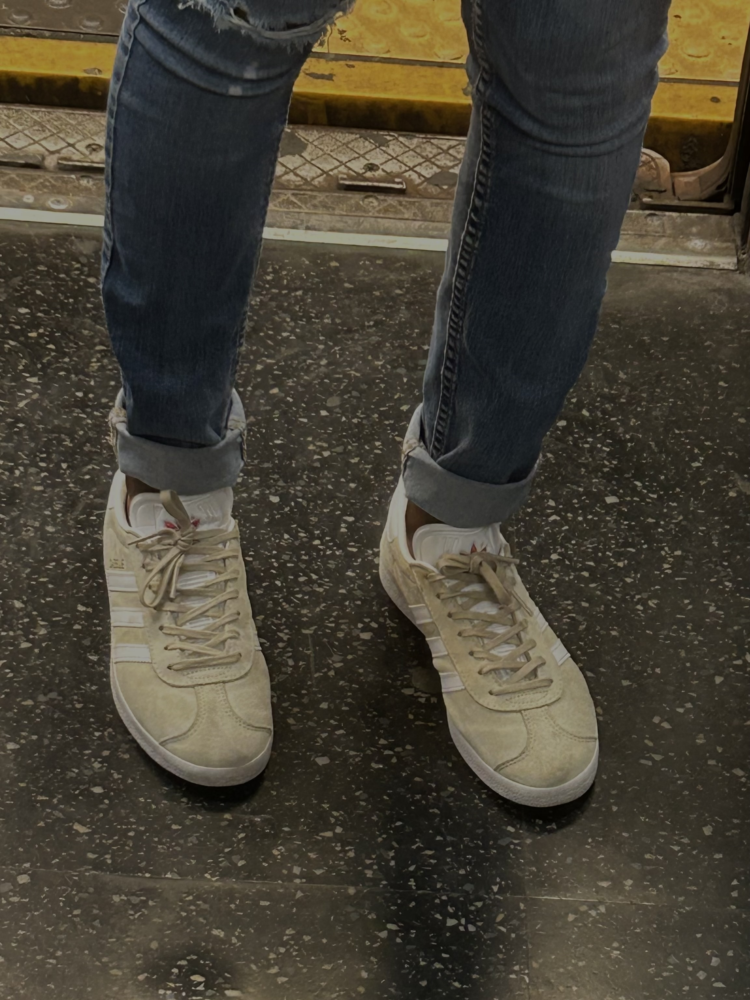
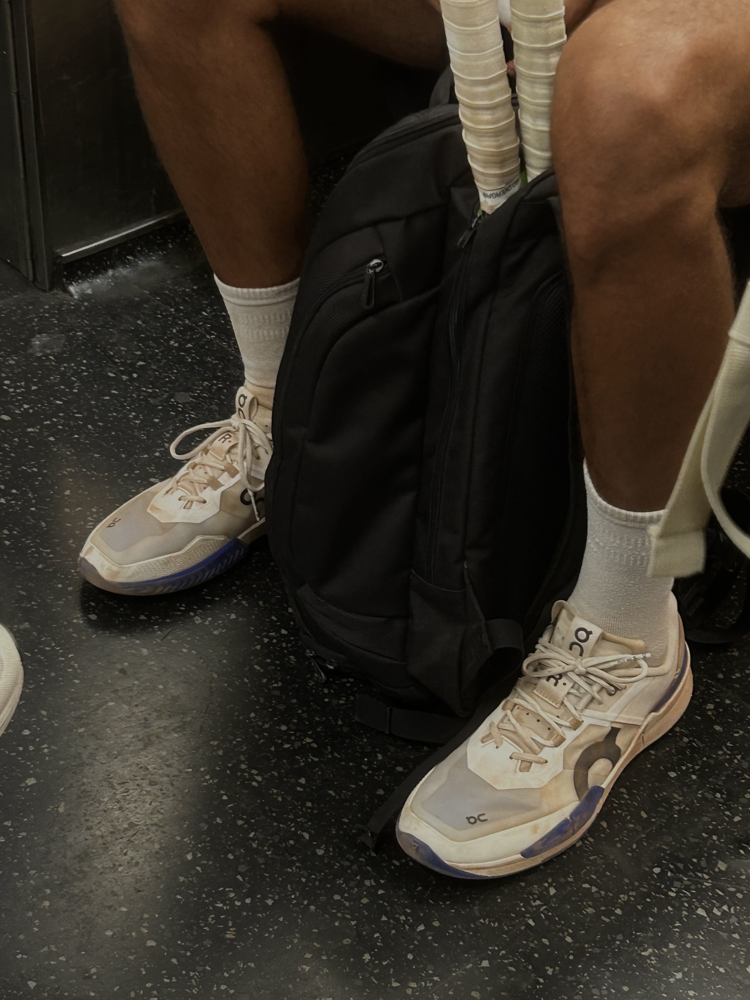
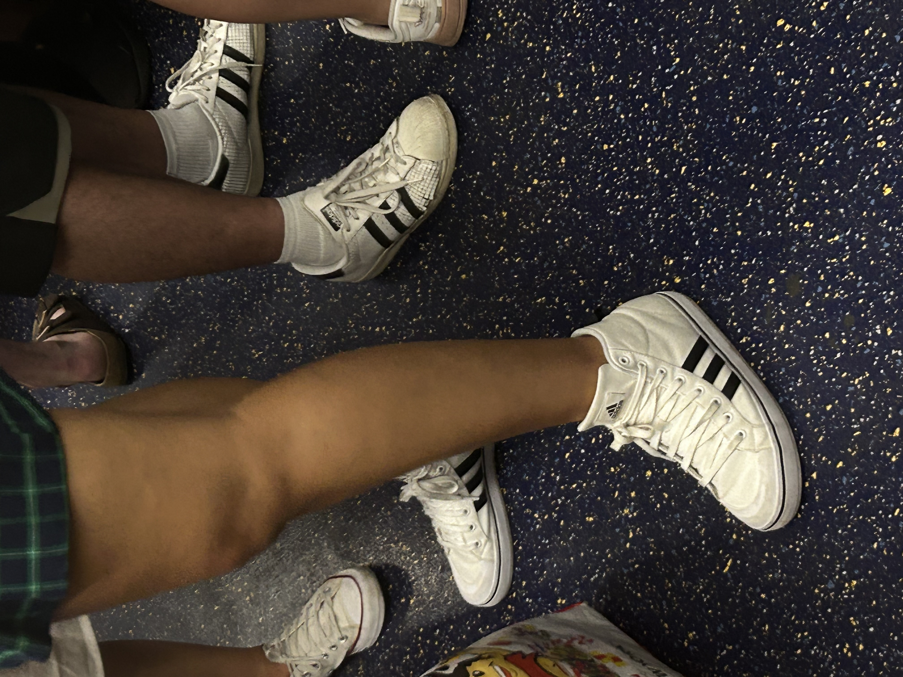
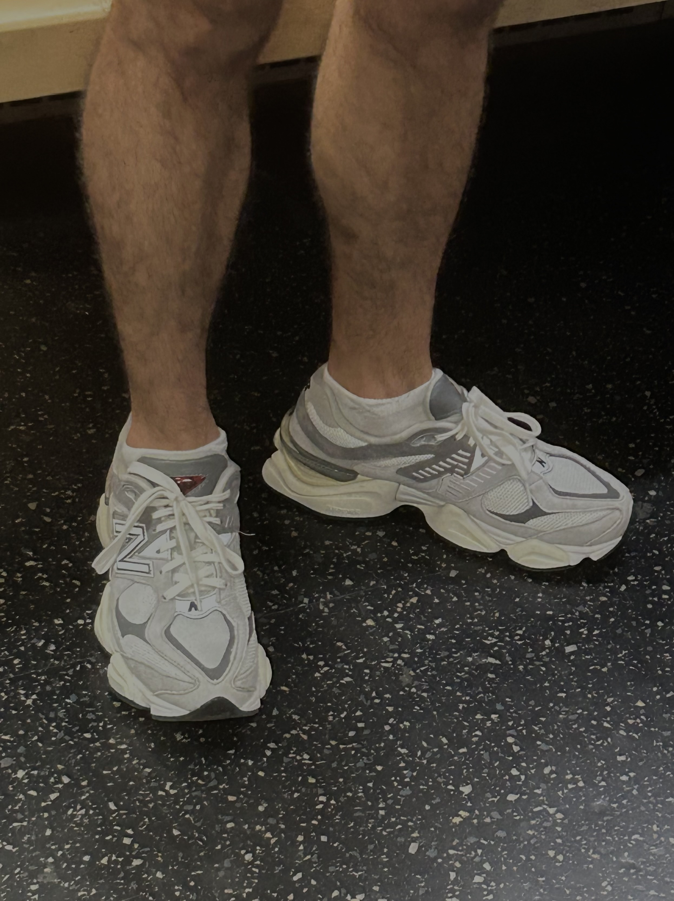
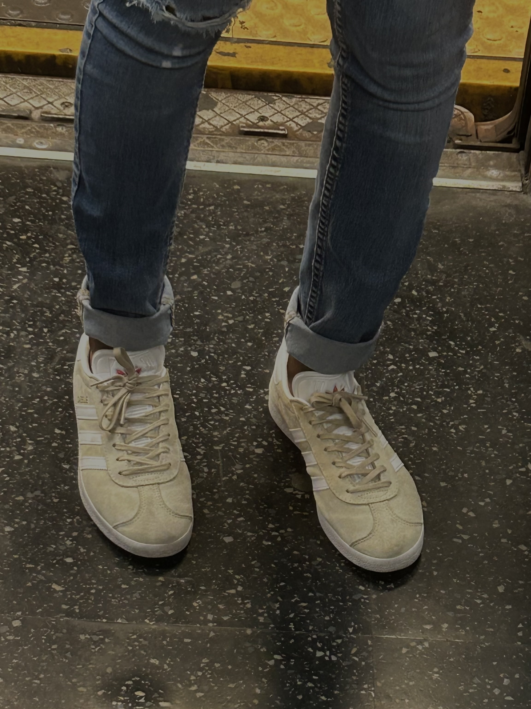
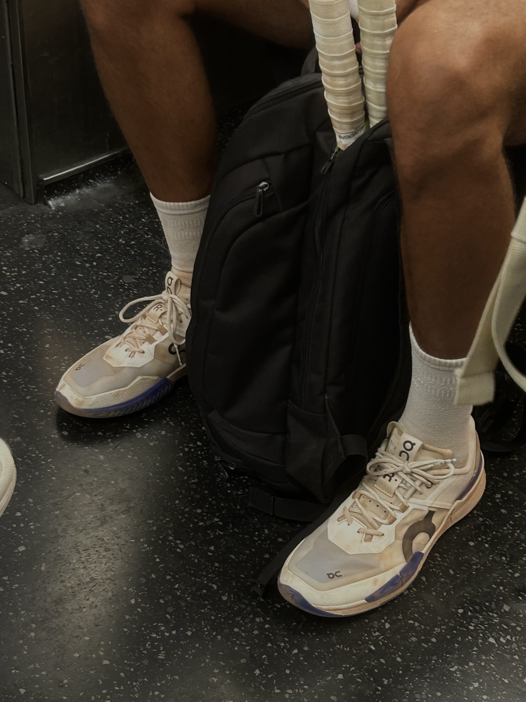